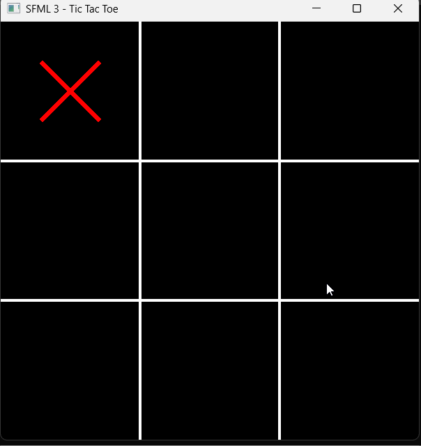

# Game Design Foundations > Monetization + Game Concepts + Game Worlds <hr> <br> Xinxing Wu
# Outline [<p class="hover-underline-animation">Monetization </p>](#/ch1) [<p class="hover-underline-animation">Game Concepts</p>](#/ch2) [<p class="hover-underline-animation">Game Worlds</p>](#/ch3) [<p class="hover-underline-animation">Lab</p>](#/ch4)
## Idea <div id="shadebox-neon" class="shadebox neon"> A game is not just “fun mechanics”—it’s a **product** with a **concept** and a **world**, and all three affect each other. </div>
<p class="definition-rainbow-title">Monetization</p>
<div class="definition-com-container"> <div class="definition-com-title">Why money affects design</div> <div class="definition-com-shadebox"> If a game is for sale, it must appeal to a target audience—and **how/where you sell** affects design decisions. :contentReference[oaicite:6]{index=6} You don’t just design “the game.” You design: - who buys/plays it - how they pay - what keeps them playing (or not) </div> </div> <div class="definition-pro-Y-container"> <div class="definition-pro-Y-title">Monetization vocabulary</div> <div class="definition-pro-Y-shadebox"> - **Monetization scheme**: the way a game makes money - **Direct payment**: players buy the game (now or over time) - **Indirect payment**: players pay in other ways (ads, sponsor, freemium, etc.) </div> </div> <div class="definition-pro-Y-container"> <div class="definition-pro-Y-title">Two big categories</div> <div class="definition-pro-Y-shadebox"> - Direct payment models - Players **purchase** the game (whole or over time). - Indirect models - Players **don’t “just buy the game”**—money comes through other channels. </div> </div> <div class="definition-pro-Y-container"> <div class="definition-pro-Y-title"> Direct payment models (overview)</div> <div class="definition-pro-Y-shadebox"> Direct payment includes: - **Retail sales / digital distribution**: buy outright - **Subscription-based sales**: pay regularly for service - **Episodic delivery**: buy “chapters/episodes” - **Crowdfunding**: players pay in advance to fund development </div> </div> <div class="definition-pro-Y-container"> <div class="definition-pro-Y-title">Retail sales (what it is)</div> <div class="definition-pro-Y-shadebox"> Traditional model: boxed games in stores (still strong for consoles). Why it lasted: **holiday retail season** (“Christmas”). </div> </div> <div class="definition-pro-Y-container"> <div class="definition-pro-Y-title">Retail sales (why it’s hard for small teams)</div> <div class="definition-pro-Y-shadebox"> - You typically need a **publisher/distributor** for shelf space. - Publishers fund development + marketing. - Marketing can cost **3–10× development** for retail games. - Publishers are conservative; prefer proven developers. Retail is usually not your first plan as a student/indie. </div> </div> <div class="definition-pro-Y-container"> <div class="definition-pro-Y-title">Example: “Retail model”</div> <div class="definition-pro-Y-shadebox"> > “We’ll ship a polished console platformer in November so families can buy it as a gift.” Design impact: - must look high-quality in trailers/box - must be *complete* at launch (few excuses) </div> </div> <div class="definition-pro-Y-container"> <div class="definition-pro-Y-title">Digital distribution</div> <div class="definition-pro-Y-shadebox"> Instead of shelves, players buy via online stores. - “Upload to a store → players download.” (Still direct payment: player buys the game outright.) </div> </div> <div class="definition-pro-Y-container"> <div class="definition-pro-Y-title">Subscription-based sales (what it feels like)</div> <div class="definition-pro-Y-shadebox"> Players subscribe to the game “as a service,” not a one-time product. Design impact (beginner-friendly): - you must keep adding value (updates, seasons, content) - stable servers / community support matters </div> </div> <div class="definition-pro-Y-container"> <div class="definition-pro-Y-title">Episodic delivery (what it feels like)</div> <div class="definition-pro-Y-shadebox"> Players buy episodes as they become available. Design impact: - each episode needs a satisfying mini-arc - consistent release schedule becomes part of “design” </div> </div> <div class="definition-pro-Y-container"> <div class="definition-pro-Y-title">Crowdfunding (what it feels like)</div> <div class="definition-pro-Y-shadebox"> Players pay **in advance** to fund development. Design impact: - you must communicate clearly (pitch, progress, trust) - backer expectations become a constraint </div> </div> <div class="definition-pro-Y-container"> <div class="definition-pro-Y-title">Indirect models (overview)</div> <div class="definition-pro-Y-shadebox"> Indirect = revenue comes through other channels than “buy the game.” Common beginner-known examples: - ads - sponsorship/commissioned games - **freemium / free-to-play** (IAP) </div> </div> <div class="definition-pro-Y-container"> <div class="definition-pro-Y-title">“Free” can still make money</div> <div class="definition-pro-Y-shadebox"> Chapter 6 explicitly notes: you can make money even if you give the game away free. - price tag = $0 - but business model ≠ $0 </div> </div> <div class="definition-pro-Y-container"> <div class="definition-pro-Y-title">Freemium / Free-to-play</div> <div class="definition-pro-Y-shadebox"> Freemium: game is free, but some features/items cost money. Design impact: - you must decide what is “free fun” vs “paid extras” - you must avoid making the game unfair/unfun </div> </div> <div class="definition-pro-Y-container"> <div class="definition-pro-Y-title">Ethics note</div> <div class="definition-pro-Y-shadebox"> If paid advantages make skill irrelevant, players may call it “pay-to-win.” Even if not banned, it can hurt trust and retention. </div> </div> <div class="definition-pro-Y-container"> <div class="definition-pro-Y-title">World markets (why it matters)</div> <div class="definition-pro-Y-shadebox"> Games sell globally, but markets differ by: - language - cultural expectations - distribution/payment access - regulations/ratings Chapter 6 discusses regions & “cultural obstacles.” </div> </div> <div class="definition-pro-Y-container"> <div class="definition-pro-Y-title">World markets (starter map)</div> <div class="definition-pro-Y-shadebox"> Major regions mentioned include: - English-speaking countries, Europe, Asia, emerging markets Also: cultural obstacles like **different moral standards**, history portrayal, and religious/cultural sensitivities. </div> </div> <div class="definition-pro-Y-container"> <div class="definition-pro-Y-title">Example: cultural obstacle</div> <div class="definition-pro-Y-shadebox"> If your game includes: - certain symbols, clothing, or religious elements It may be acceptable in one region and offensive/restricted in another. Beginner takeaway: - plan for “localization & sensitivity” early </div> </div> <div class="definition-pro-Y-container"> <div class="definition-pro-Y-title">Practice: choose a model</div> <div class="definition-pro-Y-shadebox"> <div style="width: 800px;"></div> Pick ONE simple game idea: - Endless runner - Match-3 puzzle - Top-down dungeon Then choose ONE monetization model: - direct (buy once) - subscription - episodic - freemium </div> </div> <div class="definition-pro-Y-container"> <div class="definition-pro-Y-title">Practice: choose a model (cont.)</div> <div class="definition-pro-Y-shadebox"> <div style="width: 800px;"></div> Write 2 sentences: - how players pay - what design change that forces </div> </div>
<p class="definition-rainbow-title">Game Concepts</p>
<div class="definition-com-container"> <div class="definition-com-title">Idea vs Game Concept</div> <div class="definition-com-shadebox"> A **game concept** is detailed enough that a group can discuss it as a potential product. It includes key points like: high concept statement, player role, gameplay mode, genre, target audience, platform, monetization statement, competition modes, summary of progression, and world description. </div> </div> <div class="definition-pro-Y-container"> <div class="definition-pro-Y-title">Note</div> <div class="definition-pro-Y-shadebox"> - Your goal early is to write the **high concept document**. - You don’t need all details yet, but you must know what the game is about and core answers about player, machine, audience, and monetization plan. </div> </div> <div class="definition-pro-Y-container"> <div class="definition-pro-Y-title">“Dreams of doing” (finding ideas)</div> <div class="definition-pro-Y-shadebox"> The design of a game begins with: > “What dream am I going to fulfill?” - what experience do players wish they could have? </div> </div> <div class="definition-pro-Y-container"> <div class="definition-pro-Y-title">One idea isn’t enough</div> <div class="definition-pro-Y-shadebox"> A brilliant game idea making you rich is rare. Better habit: collect many ideas and refine the promising ones. Tip: - keep a running “idea list” (notes app) </div> </div> <div class="definition-pro-Y-container"> <div class="definition-pro-Y-title">Brainstorming (group idea generation)</div> <div class="definition-pro-Y-shadebox"> <div style="width: 800px;"></div> Brainstorming generates many ideas quickly without judging quality at first. Four principles: - focus on quantity - withhold criticism - welcome unusual ideas - combine & improve ideas </div> </div> <div class="definition-pro-Y-container"> <div class="definition-pro-Y-title">Brainstorming: practical rules</div> <div class="definition-pro-Y-shadebox"> - keep group size reasonable (avoid too many people) - prevent one person dominating - avoid long explanations during idea generation </div> </div> <div class="definition-pro-Y-container"> <div class="definition-pro-Y-title">High concept statement</div> <div class="definition-pro-Y-shadebox"> A **high concept statement** is a 2–3 sentence description of what the game is about. Example given (street football): gritty, no pads, no refs, concrete. </div> </div> <div class="definition-pro-Y-container"> <div class="definition-pro-Y-title">Template: high concept statement</div> <div class="definition-pro-Y-shadebox"> <div style="width: 800px;"></div> Fill in: > **[Fantasy]** + **[Core activity]** + **[Unique twist]** > In **[setting]**, you **[verbs]** to **[goal]**, but **[challenge/twist]**. </div> </div> <div class="definition-com-container"> <div class="definition-com-title">Most important concept-stage question</div> <div class="definition-com-shadebox"> <div style="width: 800px;"></div> “What is the player going to do?” You cannot build a game from setting/character alone; you must define player actions (“verbs”). </div> </div> <div class="definition-com-container"> <div class="definition-com-title">“Verbs of the game”</div> <div class="definition-com-shadebox"> Examples from the text: RPG verbs can include explore, fight, cast spells, collect, buy/sell, talk. - list 5–10 actions your player repeats often </div> </div> <div class="definition-com-container"> <div class="definition-com-title">Design rule</div> <div class="definition-com-shadebox"> Don’t start with story/art/world first. First answer: “What is the player going to do?” </div> </div> <div class="definition-com-container"> <div class="definition-com-title">Primary gameplay mode (what it includes)</div> <div class="definition-com-shadebox"> <div style="width: 800px;"></div> A proposed primary gameplay mode includes: - camera model - interaction model - general types of challenges Notes - what the player sees - how they control - what problems they solve </div> </div> <div class="definition-com-container"> <div class="definition-com-title">Genre & hybrids (why genres help)</div> <div class="definition-com-shadebox"> <div style="width: 800px;"></div> Well-known genres give a shortcut because players expect standard actions/challenges. Publishers may prefer existing genres because big spending makes them conservative. </div> </div> <div class="definition-com-container"> <div class="definition-com-title">Hybrids (benefit + risk)</div> <div class="definition-com-shadebox"> Successful hybrid example mentioned: action-adventure (Zelda). Risk: mixing genres may appeal to neither audience. Tip: playtest early with intended audience. </div> </div> <div class="definition-com-container"> <div class="definition-com-title">Target audience</div> <div class="definition-com-shadebox"> A concept should include a description of target audience (and possibly expected rating). - “Who is this for?” is not optional. </div> </div> <div class="definition-com-container"> <div class="definition-com-title">Platform/machine</div> <div class="definition-com-shadebox"> Concept includes: - machine the game will run on - special equipment/features (camera, dance mat, etc.) Note - phone vs PC vs console changes everything </div> </div> <div class="definition-com-container"> <div class="definition-com-title">Monetization statement belongs in concept</div> <div class="definition-com-shadebox"> <div style="width: 800px;"></div> Concept includes: “A brief statement of how you expect to make money….” Note - you should know whether this is premium vs freemium early </div> </div> <div class="definition-com-container"> <div class="definition-com-title">Competition modes (basic checklist)</div> <div class="definition-com-shadebox"> <div style="width: 800px;"></div> Concept includes whether it supports: - single/dual/multiplayer - competitive or cooperative </div> </div> <div class="definition-com-container"> <div class="definition-com-title">Story: don’t overdo it at concept stage</div> <div class="definition-com-shadebox"> <div style="width: 800px;"></div> Text warns: many developers spend too much time on story and not enough on gameplay. Note - story supports gameplay; it doesn’t replace gameplay </div> </div> <div class="definition-com-container"> <div class="definition-com-title">“First Five Minutes of Play”</div> <div class="definition-com-shadebox"> <div style="width: 800px;"></div> A recommended section in a high concept doc: **“The First Five Minutes of Play”** to show what it feels like to begin. </div> </div> <div class="definition-com-container"> <div class="definition-com-title">In commercial context: extra details</div> <div class="definition-com-shadebox"> <div style="width: 800px;"></div> Publishers want: - competition - unique selling points (USPs) - marketing strategies & merchandising opportunities </div> </div> <div class="definition-com-container"> <div class="definition-com-title">Communicating your idea (two harsh questions)</div> <div class="definition-com-shadebox"> <div style="width: 900px;"></div> Publishing execs will ask: - “Why would people want to play this game?” - “What’s going to make someone buy this instead of another?” Note: - your concept must be *clearly different* </div> </div> <div class="definition-com-container"> <div class="definition-com-title">Write your high concept</div> <div class="definition-com-shadebox"> - Write a 2–3 sentence high concept statement - List 8 player verbs - Pick one camera model + platform - Describe the first 60 seconds of play </div> </div> <div class="definition-com-container"> <div class="definition-com-title">Practice questions checklist</div> <div class="definition-com-shadebox"> Chapter 7 provides concept questions, including: - high concept statement - player role, avatar - gameplay nature/challenges - interaction model - camera model </div> </div> <div class="definition-com-container"> <div class="definition-com-title">Practice questions checklist (cont.)</div> <div class="definition-com-shadebox"> Chapter 7 provides concept questions, including: - genre - single/multi/co-op - why people play + target audience - platform/hardware - setting, levels, victory conditions, story summary </div> </div>
<p class="definition-rainbow-title">Game Worlds</p>
<div class="definition-com-container"> <div class="definition-com-title">Why game worlds matter</div> <div class="definition-com-shadebox"> A game world can entertain on its own: a place to explore and interact with. World also helps sell the game: fantasy of who/where/what you’ll do. </div> </div> <div class="definition-com-container"> <div class="definition-com-title">Worlds matter most to beginners</div> <div class="definition-com-shadebox"> When players are new, the world is vital to sustain interest. (Experts may focus more on mechanics.) </div> </div> <div class="definition-com-container"> <div class="definition-com-title">Dimensions of a game world (overview)</div> <div class="definition-com-shadebox"> World properties group into **dimensions**; to define your world, consider each and answer key questions. We’ll cover (beginner lens): - Physical - Temporal - Environmental - Emotional (mood) - Ethical (values/rules) - Style + detail </div> </div> <div class="definition-com-container"> <div class="definition-com-title">Physical dimension</div> <div class="definition-com-shadebox"> Game worlds are simulated physical space; player moves/manipulates within it. Physical properties strongly affect gameplay. Three key physical properties: - spatial dimensionality - scale - boundaries </div> </div> <div class="definition-com-container"> <div class="definition-com-title">Spatial dimensionality</div> <div class="definition-com-shadebox"> Dimensionality of game space ≠ camera model or implementation. Implementation = technical design; display = UI design. Beginner translation: - “2D world” is not the same as “2D camera.” </div> </div> <div class="definition-com-container"> <div class="definition-com-title">Common dimensionalities: 2D</div> <div class="definition-com-shadebox"> In 2D side-scrolling games, you move left/right and jump, but not into/out of screen. 2D advantage: world dimensions match screen dimensions (depth easier). </div> </div> <div class="definition-com-container"> <div class="definition-com-title">Common dimensionalities: 2.5D (two-and-a-half D)</div> <div class="definition-com-shadebox"> <div style="width: 900px;"></div> Appears 3D, but is layered 2D spaces. Example mentioned: plateau/lowland layers (e.g., strategy war games). Beginner translation: - “looks 3D, plays like layered 2D.” </div> </div> <div class="definition-com-container"> <div class="definition-com-title">Scale (why games distort reality)</div> <div class="definition-com-shadebox"> If realistic map scale makes units invisible, designers exaggerate object scale. Games also distort relative heights so player can see clearly. </div> </div> <div class="definition-com-container"> <div class="definition-com-title">Indoor vs outdoor scale trick</div> <div class="definition-com-shadebox"> Outdoor travel is sped up; indoor spaces expand to show doors/furniture detail. Note - scale is a design tool, not “truth.” </div> </div> <div class="definition-com-container"> <div class="definition-com-title">Boundaries (why worlds are limited)</div> <div class="definition-com-shadebox"> Even if tech can create unlimited worlds, designers set boundaries to avoid overwhelming players or empty regions. Games often disguise boundaries to maintain immersion. </div> </div> <div class="definition-com-container"> <div class="definition-com-title">Environmental design questions</div> <div class="definition-com-shadebox"> If indoors, ask: - where does light come from? - what are walls/floors made of? - room purpose & clues - multiple stories? movement between floors? </div> </div> <div class="definition-com-container"> <div class="definition-com-title">Sound is part of the physical world</div> <div class="definition-com-shadebox"> Physical world includes sound: music, ambient sounds, noises of creatures/machines. Thinking sound + visuals together helps coherence. </div> </div> <div class="definition-com-container"> <div class="definition-com-title">Mood & tone (world sets emotion)</div> <div class="definition-com-shadebox"> Physical surroundings help set tone/mood (lighthearted vs grim). Music contributes greatly; choose genres thoughtfully. </div> </div> <div class="definition-com-container"> <div class="definition-com-title">Detail (how much is “enough”?)</div> <div class="definition-com-shadebox"> Detail supports fantasy but costs time + memory/storage. Rule of thumb: Include as much detail as you can to increase immersion **until it harms gameplay**. </div> </div> <div class="definition-com-container"> <div class="definition-com-title">Example: too much detail hurts gameplay</div> <div class="definition-com-shadebox"> If player must manage too many things, it may be “too much detail.” Note - if players feel confused, simplify. </div> </div> <div class="definition-com-container"> <div class="definition-com-title">Style (two kinds of style)</div> <div class="definition-com-shadebox"> You define: - intrinsic style of world (architecture/culture/objects) - style of artwork depicting it They aren’t the same. Example: Buddhist-temple-inspired architecture drawn like film noir. </div> </div> <div class="definition-com-container"> <div class="definition-com-title">World dimensions worksheet</div> <div class="definition-com-shadebox"> For your game concept, fill: - Physical: 2D/2.5D/3D? scale distortions? boundaries? - Environmental: indoors/outdoors? lighting? sound? - Emotional: mood words (3 adjectives) - Style: intrinsic + art style (1 sentence each) - Detail: what you model vs what you simplify </div> </div> <div class="definition-com-container"> <div class="definition-com-title">What you should leave with</div> <div class="definition-com-shadebox"> You can now: - pick a monetization model and explain its design impact - turn an idea into a concept document checklist - define a world with physical space, scale, boundaries, detail, and style </div> </div> <div class="definition-com-container"> <div class="definition-com-title">Glossary</div> <div class="definition-com-shadebox"> - Monetization scheme - Direct vs indirect payment - High concept statement - Player role - Gameplay verbs - Camera model - Interaction model </div> </div> <div class="definition-com-container"> <div class="definition-com-title">Glossary (cont.)</div> <div class="definition-com-shadebox"> - Genre / hybrid - Target audience - USP - First five minutes of play - Game world dimensions - Physical dimension (dimensionality, scale, boundaries) - Detail, intrinsic style, art style </div> </div>
<p class="definition-rainbow-title">Lab</p>
<div class="definition-com-container"> <div class="definition-com-title">Materials</div> <div class="definition-com-shadebox"> <a href="./files/Chapter 6. Making Money from Your.pdf" target="_blank">Chapter 6. Making Money from Your</a> <a href="./files/Chapter 7. Game Concepts.pdf" target="_blank">Chapter 7. Game Concepts</a> <a href="./files/Chapter 8. Game Worlds.pdf" target="_blank">Chapter 8. Game Worlds</a> </div> </div> <div class="definition-com-container"> <div class="definition-com-title">Lab</div> <div class="definition-com-shadebox"> Type: small arcade delivery game (single screen) Tool: SFML (Windows + Visual Studio) </div> </div> <div class="definition-pro-Y-container"> <div class="definition-pro-Y-title">Lab</div> <div class="definition-pro-Y-shadebox"> What students will submit High Concept Doc (1 page) World Snapshot (1 page) Monetization Statement (½ page) Working SFML prototype (zip folder or GitHub link) </div> </div> <div class="definition-pro-Y-container"> <div class="definition-pro-Y-title">Lab</div> <div class="definition-pro-Y-shadebox"> What students will submit - High Concept Doc (1 page) - World Snapshot (1 page) - Monetization Statement (½ page) - Working SFML prototype (zip folder or GitHub link) </div> </div> <div class="definition-pro-Y-container"> <div class="definition-pro-Y-title">Lab</div> <div class="definition-pro-Y-shadebox"> A. Requirements (game prototype) Build a top-down 2D delivery prototype: Core gameplay verbs (must show clearly): - Move (WASD) - Sprint (Shift) with a simple stamina meter - Deliver (press E when inside a delivery zone) - Dodge obstacles (collision blocks movement) </div> </div> <div class="definition-pro-Y-container"> <div class="definition-pro-Y-title">Lab</div> <div class="definition-pro-Y-shadebox"> A. Requirements (game prototype) Gameplay loop: - Start with 60 seconds - A delivery target appears (a colored rectangle zone) - Player reaches it → press E → score +1 → new target spawns - If time reaches 0 → show “Game Over” and final score </div> </div> <div class="definition-pro-Y-container"> <div class="definition-pro-Y-title">Lab</div> <div class="definition-pro-Y-shadebox"> A. Requirements (game prototype) World rules (from Ch8 concepts): - Boundaries: player cannot leave the screen - Scale: keep objects readable (player bigger than real life is okay) - Detail rule: only add details that help gameplay (avoid clutter) </div> </div> <div class="definition-pro-Y-container"> <div class="definition-pro-Y-title">Lab</div> <div class="definition-pro-Y-shadebox"> A. Requirements (game prototype) Optional (bonus): - simple beep sound when delivery succeeds - mood shift: background tint changes when time < 10 seconds </div> </div> <div class="definition-pro-Y-container"> <div class="definition-pro-Y-title">Lab</div> <div class="definition-pro-Y-shadebox"> B. Required concept + world + monetization write-up Students must include these concept fields: - High concept statement (2–3 sentences) Include: setting + core activity + unique twist. - Player role + gameplay mode - Player role: who are you? - Camera model: top-down - Interaction model: keyboard controls - Challenges: time + obstacles + route choice </div> </div> <div class="definition-pro-Y-container"> <div class="definition-pro-Y-title">Lab</div> <div class="definition-pro-Y-shadebox"> B. Required concept + world + monetization write-up - Genre + target audience + platform - Platform is PC (Windows) because we’re building in SFML. - “First five minutes of play” - Describe exactly what the player does and learns. </div> </div> <div class="definition-pro-Y-container"> <div class="definition-pro-Y-title">Lab</div> <div class="definition-pro-Y-shadebox"> - World snapshot (Ch8 dimensions) - Physical: 2D, scale, boundaries - Environmental: lighting/mood + sound plan - Detail rule: what you include vs omit - Style: intrinsic world style vs art style </div> </div> <div class="definition-pro-Y-container"> <div class="definition-pro-Y-title">Lab</div> <div class="definition-pro-Y-shadebox"> Monetization statement (Ch6) - Pick one model (direct purchase / episodic / subscription / freemium) and explain: - why it matches your experience - what design changes it forces </div> </div> <div class="definition-pro-Y-container"> <div class="definition-pro-Y-title">Reference Answer</div> <div class="definition-pro-Y-shadebox"> 1.High Concept Doc (sample) Title: Dorm Dash High concept statement (2–3 sentences): Dorm Dash is a fast, funny delivery game set on a small college campus at night. You sprint and weave around obstacles to deliver items before the timer runs out, learning shortcuts and optimizing routes. The twist: sprinting costs stamina, so players must choose when to burst and when to conserve. </div> </div> <div class="definition-pro-Y-container"> <div class="definition-pro-Y-title">Reference Answer</div> <div class="definition-pro-Y-shadebox"> Player role + avatar: You are a student courier. The avatar is a simple top-down character (circle). Primary gameplay mode: - Camera model: top-down, single screen - Interaction model: WASD movement, Shift sprint, E deliver - Challenges: time pressure, obstacle navigation, stamina management Genre: Arcade / time-trial action </div> </div> <div class="definition-pro-Y-container"> <div class="definition-pro-Y-title">Reference Answer</div> <div class="definition-pro-Y-shadebox"> Target audience: Casual players who like short sessions and quick improvement Platform: Windows PC (SFML keyboard input fits well) Competition mode: Single-player score chase (optional leaderboard later) Progression summary: Prototype is one screen. Future expansion: multiple campus zones, harder obstacles, weather, more delivery types. </div> </div> <div class="definition-pro-Y-container"> <div class="definition-pro-Y-title">Reference Answer</div> <div class="definition-pro-Y-shadebox"> First five minutes of play: - Minute 0–1: player learns WASD movement and boundaries. - Minute 1–2: player sees a delivery zone and learns “go there, press E.” - Minute 2–4: player learns obstacles block movement and sprint drains stamina. - Minute 4–5: player learns route choice—direct path vs safe path. </div> </div> <div class="definition-pro-Y-container"> <div class="definition-pro-Y-title">Reference Answer</div> <div class="definition-pro-Y-shadebox"> 2. World Snapshot (sample) Physical dimension: - Dimensionality: 2D top-down - Scale: exaggerated for readability (player and zones are large enough to see clearly) - Boundaries: screen edges act like walls; player cannot leave Environmental + mood: Night campus vibe: dark background, bright delivery zone colors. Music optional; simple “delivery beep” improves feedback. </div> </div> <div class="definition-pro-Y-container"> <div class="definition-pro-Y-title">Reference Answer</div> <div class="definition-pro-Y-shadebox"> 2. World Snapshot (sample) Detail rule: Include only gameplay-relevant objects (obstacles, targets, stamina bar). No decorative clutter that confuses navigation. Style: - Intrinsic style: campus paths and simple “construction barriers” - Art style: minimal flat shapes (clean, readable) </div> </div> <div class="definition-pro-Y-container"> <div class="definition-pro-Y-title">Reference Answer</div> <div class="definition-pro-Y-shadebox"> 3. Monetization Statement (sample) Model: Direct payment (one-time purchase, low price). Why it fits: The game is skill-based and short-session; one-time purchase keeps it fair and avoids pay-to-win. Design impact: Because players pay once, the launch build must feel complete and polished (good feedback, clear UI, solid controls). </div> </div> <div class="definition-pro-Y-container"> <div class="definition-pro-Y-title">Reference Answer</div> <div class="definition-pro-Y-shadebox"> 4. SFML Implementation Reference (explained) Minimal architecture (beginner-friendly) - main() creates window, shapes, clock - game loop: - handle input - update with delta time - collision resolution - draw UI </div> </div> <div class="definition-com-container"> <div class="definition-com-title">Reference Answer</div> <div class="definition-com-shadebox"> ``` #include <SFML/Graphics.hpp> #include <SFML/Audio.hpp> #include <algorithm> #include <cmath> #include <cstdlib> #include <ctime> #include <string> // ---------- helpers ---------- float clampf(float v, float a, float b) { if (v < a) return a; if (v > b) return b; return v; } // SFML 3.x safe AABB overlap (works even if FloatRect::intersects is unavailable) bool rectOverlap(const sf::FloatRect& a, const sf::FloatRect& b) { return (a.position.x < b.position.x + b.size.x) && (a.position.x + a.size.x > b.position.x) && (a.position.y < b.position.y + b.size.y) && (a.position.y + a.size.y > b.position.y); } int main() { std::srand(static_cast<unsigned>(std::time(nullptr))); const float W = 960.f; const float H = 540.f; sf::RenderWindow window(sf::VideoMode({ static_cast<unsigned>(W), static_cast<unsigned>(H) }), "Dorm Dash (SFML 3.x)"); window.setFramerateLimit(60); // Player sf::CircleShape player(16.f); player.setOrigin({ 16.f, 16.f }); player.setPosition({ 200.f, 200.f }); float baseSpeed = 220.f; float sprintSpeed = 340.f; // Stamina float stamina = 100.f; float staminaMax = 100.f; float staminaDrainPerSec = 35.f; float staminaRegenPerSec = 20.f; // Timer + Score float timeLeft = 60.f; int score = 0; // Obstacles sf::RectangleShape obs1({ 220.f, 30.f }); obs1.setPosition({ 220.f, 160.f }); sf::RectangleShape obs2({ 30.f, 220.f }); obs2.setPosition({ 500.f, 220.f }); // Delivery zone sf::RectangleShape zone({ 60.f, 60.f }); zone.setOrigin({ 30.f, 30.f }); auto respawnZone = [&]() { float x = 80.f + static_cast<float>(std::rand() % static_cast<int>(W - 160.f)); float y = 80.f + static_cast<float>(std::rand() % static_cast<int>(H - 160.f)); zone.setPosition({ x, y }); }; respawnZone(); // ----- Font (no SFML default font exists) ----- // Use Windows-installed fonts so you don't need arial.ttf next to exe. sf::Font font; bool hasFont = font.openFromFile("C:/Windows/Fonts/arial.ttf"); if (!hasFont) hasFont = font.openFromFile("C:/Windows/Fonts/segoeui.ttf"); sf::Text hud(font); // SFML 3: Text must be constructed with a font if (hasFont) { hud.setCharacterSize(18); hud.setPosition({ 12.f, 10.f }); } // Optional sound (won't crash if missing) sf::SoundBuffer okBuf; bool hasSound = okBuf.loadFromFile("ok.wav"); // SFML 3 still uses loadFromFile for SoundBuffer in many builds sf::Sound okSound(okBuf); // SFML 3: construct with buffer // If your SFML 3 build requires openFromFile here too, use: // bool hasSound = okBuf.openFromFile("ok.wav"); sf::Clock clock; while (window.isOpen()) { // Events (SFML 3) while (auto ev = window.pollEvent()) { if (ev->is<sf::Event::Closed>()) window.close(); } float dt = clock.restart().asSeconds(); if (dt > 0.05f) dt = 0.05f; bool gameOver = (timeLeft <= 0.f); if (!gameOver) { timeLeft -= dt; if (timeLeft < 0.f) timeLeft = 0.f; // Movement input sf::Vector2f move{ 0.f, 0.f }; if (sf::Keyboard::isKeyPressed(sf::Keyboard::Key::W)) move.y -= 1.f; if (sf::Keyboard::isKeyPressed(sf::Keyboard::Key::S)) move.y += 1.f; if (sf::Keyboard::isKeyPressed(sf::Keyboard::Key::A)) move.x -= 1.f; if (sf::Keyboard::isKeyPressed(sf::Keyboard::Key::D)) move.x += 1.f; float len = std::sqrt(move.x * move.x + move.y * move.y); if (len > 0.f) { move.x /= len; move.y /= len; } bool wantSprint = sf::Keyboard::isKeyPressed(sf::Keyboard::Key::LShift); float speed = baseSpeed; if (wantSprint && stamina > 0.f && len > 0.f) { speed = sprintSpeed; stamina -= staminaDrainPerSec * dt; } else { stamina += staminaRegenPerSec * dt; } stamina = clampf(stamina, 0.f, staminaMax); sf::Vector2f oldPos = player.getPosition(); player.move(move * speed * dt); // Boundaries sf::Vector2f p = player.getPosition(); p.x = clampf(p.x, 16.f, W - 16.f); p.y = clampf(p.y, 16.f, H - 16.f); player.setPosition(p); // Collision with obstacles (revert) if (rectOverlap(player.getGlobalBounds(), obs1.getGlobalBounds())) player.setPosition(oldPos); if (rectOverlap(player.getGlobalBounds(), obs2.getGlobalBounds())) player.setPosition(oldPos); // Delivery bool inZone = rectOverlap(player.getGlobalBounds(), zone.getGlobalBounds()); if (inZone && sf::Keyboard::isKeyPressed(sf::Keyboard::Key::E)) { score += 1; respawnZone(); if (hasSound) okSound.play(); } } // Visual mood shift when time is low sf::Color bg = (timeLeft < 10.f && timeLeft > 0.f) ? sf::Color(30, 0, 0) : sf::Color(10, 10, 18); // Draw window.clear(bg); // Obstacles obs1.setFillColor(sf::Color(120, 120, 140)); obs2.setFillColor(sf::Color(120, 120, 140)); window.draw(obs1); window.draw(obs2); // Zone color changes when player is inside bool inZoneNow = rectOverlap(player.getGlobalBounds(), zone.getGlobalBounds()); zone.setFillColor(inZoneNow ? sf::Color(60, 200, 120) : sf::Color(80, 120, 220)); window.draw(zone); // Player player.setFillColor(sf::Color(240, 240, 240)); window.draw(player); // Stamina bar sf::RectangleShape barBg({ 200.f, 12.f }); barBg.setPosition({ 12.f, 40.f }); barBg.setFillColor(sf::Color(50, 50, 60)); sf::RectangleShape bar({ 200.f * (stamina / staminaMax), 12.f }); bar.setPosition({ 12.f, 40.f }); bar.setFillColor(sf::Color(200, 180, 60)); window.draw(barBg); window.draw(bar); // HUD if (hasFont) { std::string s = "Score: " + std::to_string(score) + " Time: " + std::to_string(static_cast<int>(timeLeft)) + " Sprint: Shift (uses stamina) Deliver: E"; if (timeLeft <= 0.f) s += " GAME OVER"; hud.setString(s); window.draw(hud); } else { // If font failed, still show score in title window.setTitle("Dorm Dash (SFML 3.x) Score: " + std::to_string(score) + " Time: " + std::to_string(static_cast<int>(timeLeft))); } window.display(); } return 0; } ``` </div> </div> <p></p> <div class="definition-pro-Y-container"> <div class="definition-pro-Y-title">Answer</div> <div class="definition-pro-Y-shadebox"> ``` #include <SFML/Graphics.hpp> #include <optional> #include <iostream> // ------------------------------------------------------------ // Check winner // ------------------------------------------------------------ char checkWinner(char b[3][3]) { // rows for (int r = 0; r < 3; r++) if (b[r][0] != ' ' && b[r][0] == b[r][1] && b[r][1] == b[r][2]) return b[r][0]; // columns for (int c = 0; c < 3; c++) if (b[0][c] != ' ' && b[0][c] == b[1][c] && b[1][c] == b[2][c]) return b[0][c]; // diagonals if (b[0][0] != ' ' && b[0][0] == b[1][1] && b[1][1] == b[2][2]) return b[0][0]; if (b[0][2] != ' ' && b[0][2] == b[1][1] && b[1][1] == b[2][0]) return b[0][2]; return ' '; } // ------------------------------------------------------------ // Main // ------------------------------------------------------------ int main() { const int SIZE = 600; const int CELL = SIZE / 3; sf::RenderWindow window( sf::VideoMode({ SIZE, SIZE }), "SFML 3 - Tic Tac Toe" ); window.setFramerateLimit(60); char board[3][3] = { {' ', ' ', ' '}, {' ', ' ', ' '}, {' ', ' ', ' '} }; bool xTurn = true; bool gameOver = false; char winner = ' '; sf::RectangleShape line; line.setFillColor(sf::Color::White); while (window.isOpen()) { while (const std::optional<sf::Event> event = window.pollEvent()) { if (event->is<sf::Event::Closed>()) window.close(); if (const auto* mouse = event->getIf<sf::Event::MouseButtonPressed>()) { if (mouse->button == sf::Mouse::Button::Left) { int col = mouse->position.x / CELL; int row = mouse->position.y / CELL; // Reset game if over if (gameOver) { for (int r = 0; r < 3; r++) for (int c = 0; c < 3; c++) board[r][c] = ' '; xTurn = true; gameOver = false; winner = ' '; continue; } if (row < 3 && col < 3 && board[row][col] == ' ') { board[row][col] = xTurn ? 'X' : 'O'; winner = checkWinner(board); if (winner != ' ') { gameOver = true; std::cout << "Winner: " << winner << std::endl; } xTurn = !xTurn; } } } } window.clear(sf::Color::Black); // Draw grid for (int i = 1; i < 3; i++) { line.setSize({ 4.f, (float)SIZE }); line.setPosition({ i * CELL - 2.f, 0 }); window.draw(line); line.setSize({ (float)SIZE, 4.f }); line.setPosition({ 0, i * CELL - 2.f }); window.draw(line); } // Draw marks for (int r = 0; r < 3; r++) { for (int c = 0; c < 3; c++) { float cx = c * CELL + CELL / 2.f; float cy = r * CELL + CELL / 2.f; if (board[r][c] == 'X') { sf::RectangleShape x1({ 120.f, 6.f }); sf::RectangleShape x2({ 120.f, 6.f }); x1.setFillColor(sf::Color::Red); x2.setFillColor(sf::Color::Red); x1.setOrigin({ 60.f, 3.f }); x2.setOrigin({ 60.f, 3.f }); x1.setPosition({ cx, cy }); x2.setPosition({ cx, cy }); x1.setRotation(sf::degrees(45.f)); x2.setRotation(sf::degrees(-45.f)); window.draw(x1); window.draw(x2); } else if (board[r][c] == 'O') { sf::CircleShape o(50.f); o.setFillColor(sf::Color::Transparent); o.setOutlineColor(sf::Color::Green); o.setOutlineThickness(6.f); o.setOrigin({ 50.f, 50.f }); o.setPosition({ cx, cy }); window.draw(o); } } } window.display(); } return 0; } ``` </div> </div>